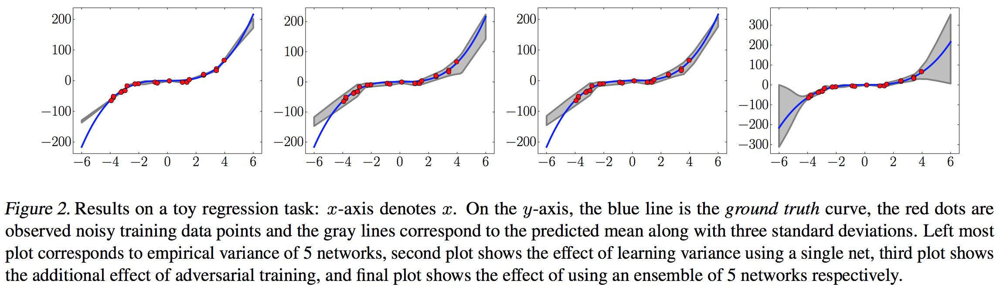
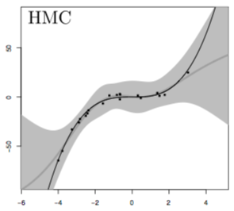
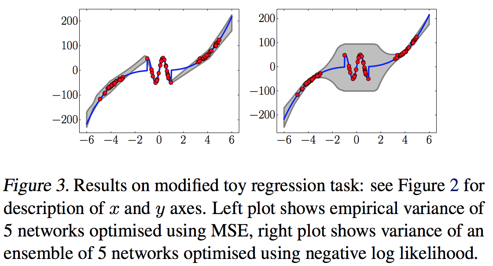
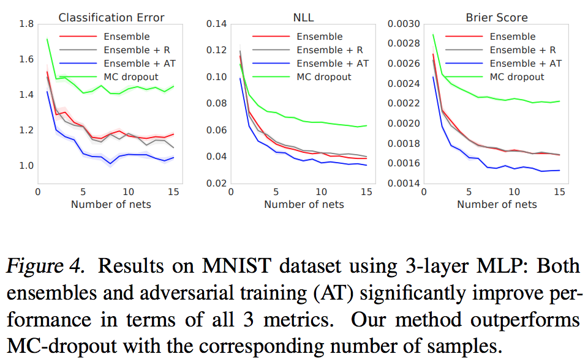
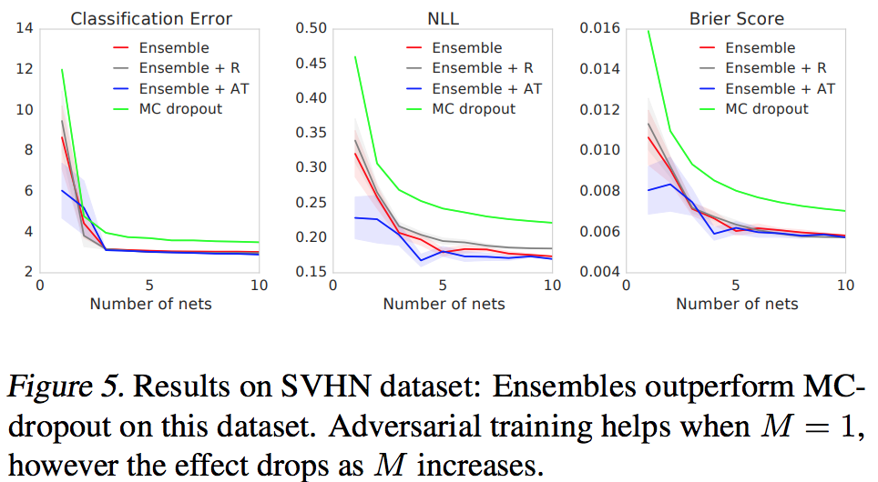
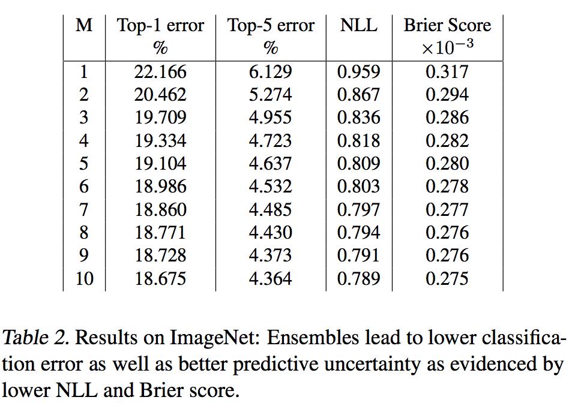
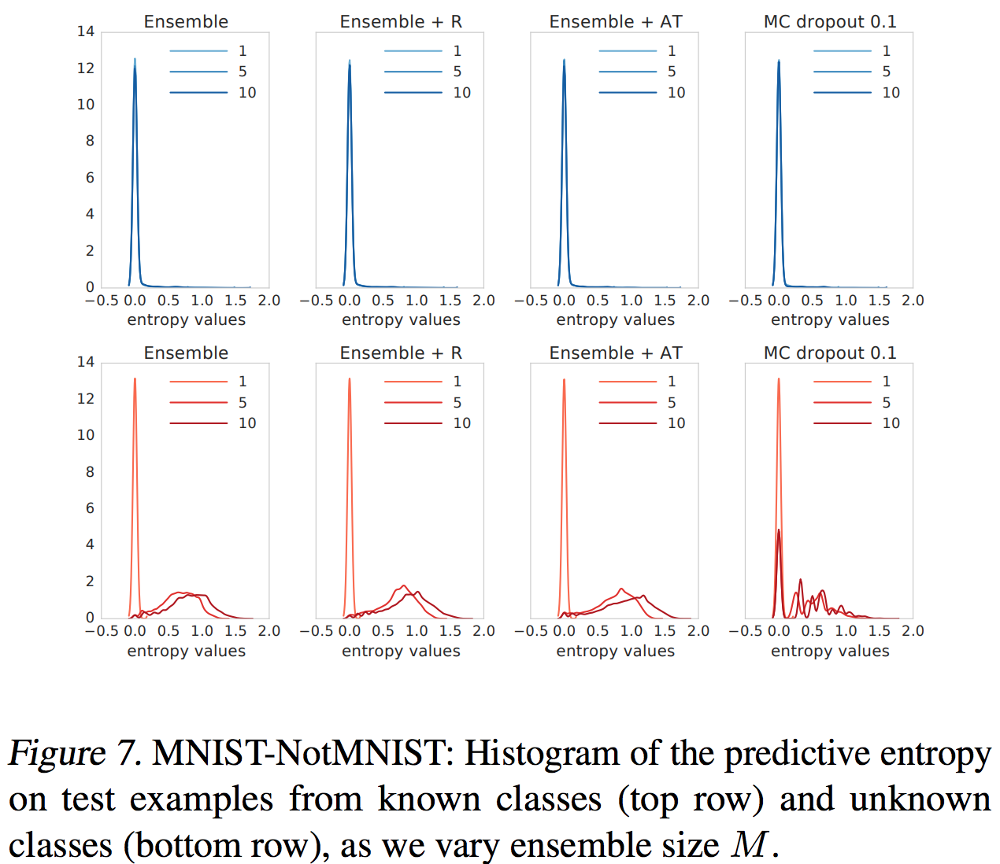
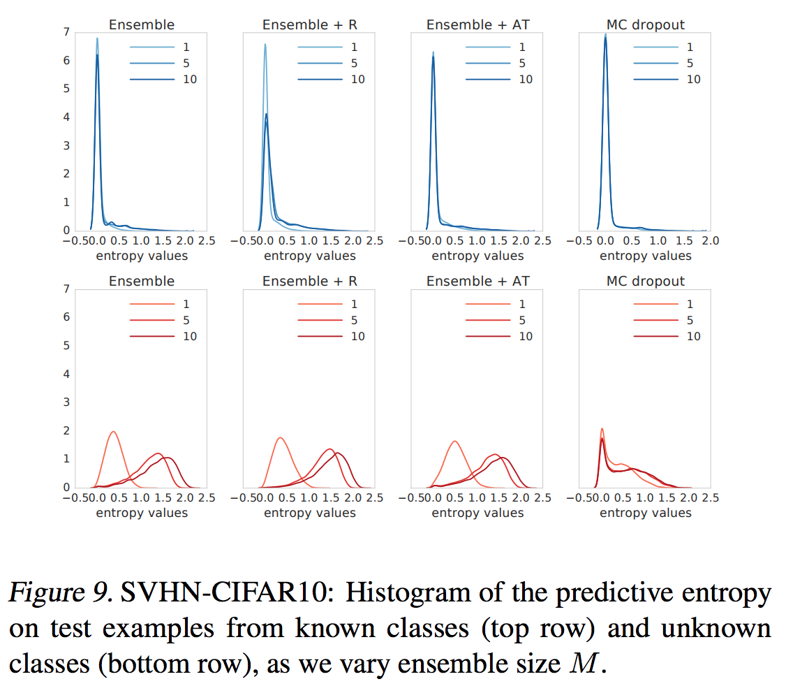
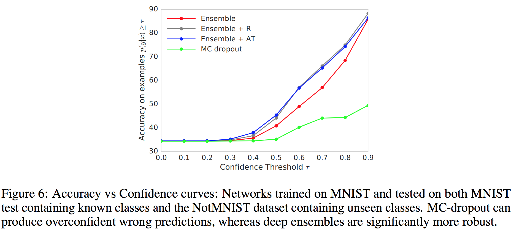

Simple and Scalable Predictive Uncertainty Estimation using Deep Ensembles
Если кратко, то ребята из гугла предложили простой в применении и эффективный на практике метод для оценки uncertainty для нейронных сетей. Математики в данной статье по минимуму, много экспериментов и сравнений, поэтому будет много картиночек и почти не будет формул.
Идея метода крайне проста — использвать ансамбль нейронных сетей (не Байесовских! O_o), которые предсказывают не ответ а распределение (нормальное для регрессии и категориальное для классификации).
Рецепт
Авторы предлагают следующие ингредиенты для обучения ‘’Глубинного Ансамбля’’:
- Использовать в качестве лосс-функции proper scoring rule \(S(p_{\theta}, (x, y))\). Должно обладать следующим свойством: \[ \mathcal{S}(p_{\theta}, q) = \mathbb{E}_{q} S(p_{\theta}, (x, y)) \leq \mathbb{E}_{q} S(q, (x, y)) = \mathcal{S}(q, q) , \, \forall p_{\theta} \neq q \] где \(q\) – истинное распределение на парах \((x, y)\). Таким свойством, например, обладает negative log likelihood для регрессии и кросс-энтропия для классификации.
- Использовать adversarial training для увеличения робастности сети и дата-аугментации. В частности, они предлагают на каждом шаге для каждого объекта использовать fast gradient sign method и минимизировать суммарный лосс на обоих объектах: \[ x' = x + \varepsilon \cdot \text{sign}(\nabla_x l(\theta, x, y))\]
- Использоват ансамбль нейронных сетей. Это, как мне кажется, одна из самых забавных вещей, потому что они предлагают формировать ансамбль из моделей, которые обучались из разных начальных приближений. Мотивация крайне проста — оптимизируемый функционал многомодален, поэтому модели скатятся в разные локальные минимумы.
Ансамблирование в задаче классификации происходит просто усреднением вероятностей соответствующих классов. В задаче регрессии же получется смесь нормальных распределение, авторы предлагают аналитически посчитать среднее и дисперсию и использовать только их. Однако, в своих результатах они приводят результаты для небольшого количества сетей (максимум 15), поэтому можно и напрямую оперировать смесью.
Во всех экспериментах для регрессии авторы используют в качестве лосса NLL:
\[ -\log p_{\theta}(y|x) = \dfrac{\log \sigma_{\theta}^2(x)}{2} + \dfrac{(y - \mu_{\theta}(x))^2}{2 \sigma_{\theta}^2(x)} + const \]
Эксперименты
Sampled variance VS Estimated

Видно, что ансамбль, обученный просто на MSE, не дает хорошей оценки неопределённости. Что в целом ясно, потому что MSE этого не учитывает, в отличии от NLL. Вот к примеру распределение, оцененное с помощью HMC, которое, думаю, можно рассматривать как истинное. (обратите внимание, что масштаб разный)

Тоже интересный эффект от использования NLL вместо MSE (который почему-то убрали в последней ревизии):

Как видно, ансамбль обученный на NLL воспринимает синисоиду в окрестности нуля за шум, в отличии от ансамбля обученного на MSE, который достаточно точно проходит по всем точкам. Однако понятно, что полезность такого эффекта зависит от конкретной задачи.
Классификация
Авторы также представили сравниение качества модели и uncertainty для задач классификации на MNIST и SVHN (странно, что нет CIFAR10, наверное не взлетело).


На представленных датасетах модель лучше MC Dropout по качеству и оценке неопределённости. В Ensemble + R для построения adversarial примера использовалось случайное направление, а не градиент функции потерь, таким образом можно выделить эффект adversarial training.
Также авторы представили результаты на ImageNet, модель inception:

Довольно странно, что нет сравнениея с MC Dropout, ведь в данной модели он есть.
Неопределённость на незнакомых данных
Предыдущие метрики NLL и Brier score показывают, насколько сеть уверена в правильном ответе и насколько она уверена в неправильном для данных из “одного распределения”. Другим важным показателем является уверенность модели в объектах “далеких” от обучающей выборки. Для этого авторы обучают модель на одном датасете и измеряют энтропию предсказания на другом. (Подписи – “датасет на котором обучались – датасет на котором тестировали”).


Видно, что одна сеть сильно уверена в ошибочном ответе. Ансамблирования сильно помогает исправить данную ситуацию и по высокой энтропии предсказания можно понять, что модель не может сделать хорошего предсказания. В обоих примерах визуально модель DeepEnsembles показывает себя лучше чем MC Dropout.
Следующий эксперимент показывает практическую пользу полученой оценки на uncertainty. Авторы объединили датасеты MNIST и NotMNIST и считали долю правильных ответов на объектах для которых вероятность самого вероятного класса больше порога \(\tau\).

Как видно, MC Dropout оказывается сильно уверен во многих неверных своих ответах, в то время как DeepEnsembles оказывается более робастной моделью. Однако, этому эксперименту не хватает графика доли объектов каждого из датасетов, на которых модель выдает ответ с увереностью больше порога. Без них достаточно сложно интерпретировать результаты, хотя кажутся они впечатляющими.
Резюме
Очень интересные результаты для такой простой техники. Стоит, однако, помнить, что если в случае дропаута “разные” сети получаются применением масок, то здесь приходится хранить все модели. Хоть экспериментов в статье приведено достаточно много, хотелось бы еще более детального обзора. Например везде берется небольшое количесвто моделей, однако интересно, возможно ли достичь такого же результата с большим числом моделей для MC Dropout (хотя судя по графикам они выходят на асимптоту, так что нет) и если да, то скольким.
Так же не хватает экспериментов с другими моделями приближения байесовского вывода, так например для VI в Multiplicative Normalizing Flows for Variational Bayesian Neural Networks некоторые методы (фактически выбор вариационного распределения) показывают лучшее качество на некоторых задачах (рассмотренных и в этой статье).